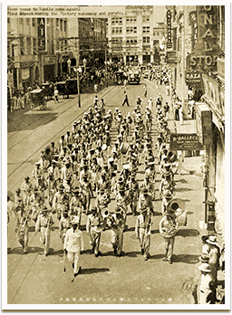

|
j
a v a s c r i p t |
May 18, 1942

Victory Parade
An ex-correspondent of the Free Press took some notes of an ugly scene at the Congress Hotel. An American POW driving a truck was invited to the bar and forced to drink until he ran out and threw up. Then he was forced to drink more. He was so drunk in the end that he stalled the engine a number of times. An impatient Japanese soldier grabbed a bottle and slugged him in the back of the neck. Fortunately the truck cooperated and started up. There were many witnesses — all angry but unable to interfere. Tomorrow, the papers will elaborate on today's parade. I'll content myself with a review of the funniest broadcast I've ever heard. Trying to copy U.S. reporters, KZRH had four men out, Victoriano of the Tribune, someone from La Vanguardia, one Eric Johnston and one other. All spoke extemporaneously, attempting to imitate the prescribed forms, and it all ended up being very amusing. I took some notes: It's certainly hot today — extremely hot. Now let me turn the mike over to.... Yes, it's a beautiful day, not too hot — no, not too hot — just right in fact. Yes, I would say it's a beautiful day done to a crisp. Everything is nice. The crowd has been very quiet which is surprising because there is such a large crowd. As far as the eye can see there are people in white carrying flags — all the way to the City Hall in fact. Now here come a few trucks with a machine gun in each, evidently ... er, to ... ah, cover the crowds here. And now there comes the guest of honor, the conqueror of Bataan and Corregidor and the Filipinos, in whose honor this parade is being held — as well as for peace to the Philippines too, of course. Lt. General Masaharu Homma is taking his place now. He is wearing a nice pressed uniform. He's got a cap on. He's sporting a nice closely cropped mustache. His boots are shiny. He is very well dressed. He ... er, sits on the seat of honor. And now here comes the Philippine General Hospital Units. Oh yes — nurses, resplendent in their white uniforms — with headdresses of every description. Some of the girls did not send their uniforms to the washer, they're not dressed like the rest — I guess that's it. And here is another truckload of soldiers — it seems there are more soldiers than paraders — because ... well, I guess you understand. And now the next unit is ... let me see ... they have a large banner but I can't read it yet. Oh yes, the Department of Public Health, or rather, Works. It's awfully warm out here. There's a battery of photographers going to work on Lt. Gen. Homma. Yes, I'll probably get my picture in too. We have are our Sampaguita Studio cameras manned by Japanese photographers. Sampaguita Studios are ... er, not working these days. Some of the people I see don't know how to carry the Japanese flags — evidently they haven't been instructed. Some are using it to shield the sun. Some carry them below the thighs; some are carrying them with their hats on. They are being told now to take off their hats, of course.... And now the Bureau of Public Utilities ... and here come the Stevedores marching — out of step — but they're here anyway to help celebrate the return of peace to the Philippines and victory and the real beginning of the Greater East Asia Co-Prosperity Sphere. And now ... [we could hear 3 or 4 voices] yes, it's the Stevedores shouting Banzai [more like Bankay, Tagalog for corpse]. They shouted it three times in the prescribed manner. That's the first time we heard Banzai this morning, yes sir, it took the Stevedores to show them how. And now the Philippine Red Cross girls in gray and white although some of the girls ... just lack the proper uniforms, hence they are in ordinary clothes. And now the Metropolitan Water Works — the water boys — are marching ... no, walking; they don't know how to march. Yes sir, the boys are all wet — but not now, now they're all dry. And here's another band. I don't know which is it. Anyway, the Philippine Constabulary band has shut up for a while and this other band is playing. It's the [long pause] ... it's the Greater Manila Band. And here comes the police — no the fire department. By the way, if there's fire in your house let us know. I can see the mayor looking with adoring eyes at his men. These are the units of Greater Manila. They salute! The firemen salute and the reviewing stand members salute back. Yes sir, they stand and salute right back. Oh what a day, what a parade — as far as the eye can see — all out to help celebrate the great victory and prosperous future. Here's the Finance Commissioner — he doesn't look busy — well, you know there's not much money these days. Here come the engineers. There are a lot of roads in Manila that need fixing by the way. The ruts and bumps are getting bigger and bigger. Especially in Calle ... that's where I live. After the parade I'm going to invite the engineers to come and fix our road. And now I turn over the mike to.... Hello folks, everything is fine — as far as the eye can see. All the way to the City Hall, the marchers are going very slow, too slow — it's hot and they're exhausted. Now I'll hand over to.... Here comes the provincianos in their Barong Tagalogs — maybe not their best ones but cool — yes sir, mighty cool. This unit is the largest in the parade, maybe 2,000 in all. The Department of Health and Welfare is marching now. The Philippine Constabulary band is playing now — their repertory is inexhaustible — yes sir, that's the word. I wish someone would tell those people standing under the trees — evidently to catch the shade — someone should tell them to come out in the open and march in the proper way. Mayor Guinto has just told the paraders to walk faster but it seems the paraders are ... well, rather exhausted. Or perhaps they want to get a better view of Lt. Gen. Homma.... |
|
|
|
|